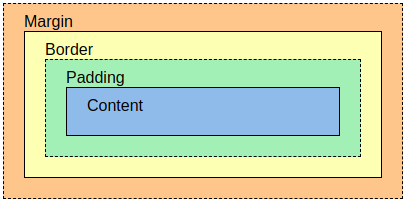

El navegador estructura la información en bloques (cajas).
El bloque principal es el que forman las etiquetas body.
El bloque body, a su vez, contiene subloques formados por las otras etiquetas como p, h1, div, etc.
Por defecto, el navegador muestra los elementos de bloque como rectángulos y con una distancia entre ellos.

Las tres características vistas se pueden combinar para cada uno de los bordes, y de manera independiente para cada borde.
por ejemplo, border-top-width, border-top-color, border-top-style definiría la anchura, color y el estilo del borde superior
También Se puede indicar las propiedades vistas de manera abreviada
Finalmente, con "border" se puede indicar la propiedad de manera abreviada para los cuatro bordes
Veamos algunos ejemplos:
Veamos un ejemplo:
Veamo un ejemplo definiendo una caja (DIV)
Esto es un párrafo sin formato (formato estándard) antes del DIV
Padding es el espacio entre el contenido y el borde de la caja. Al igual que con los márgenes, se pueden usar unidades de longitud o porcentajes. Los valores que pueden tomar son: padding-top, padding-bottom, padding-left, padding-right
Esto es un párrafo sin formato (formato estándard) después del DIV